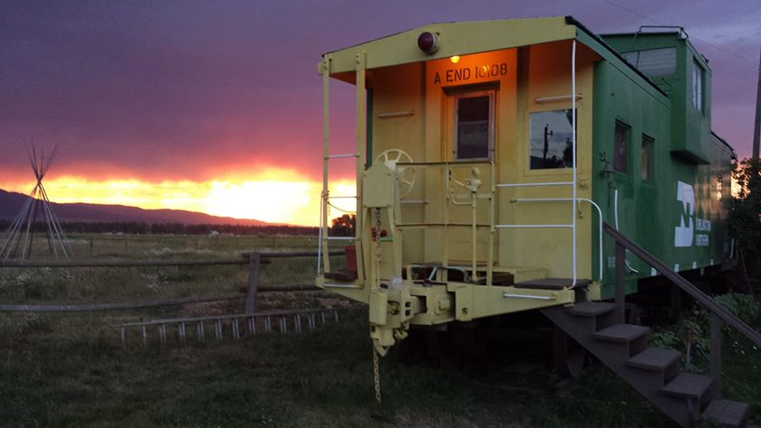
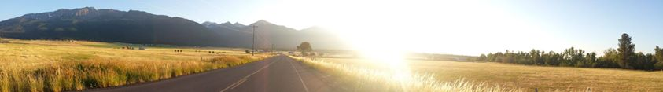
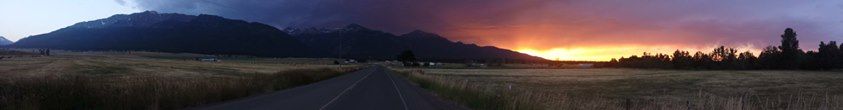
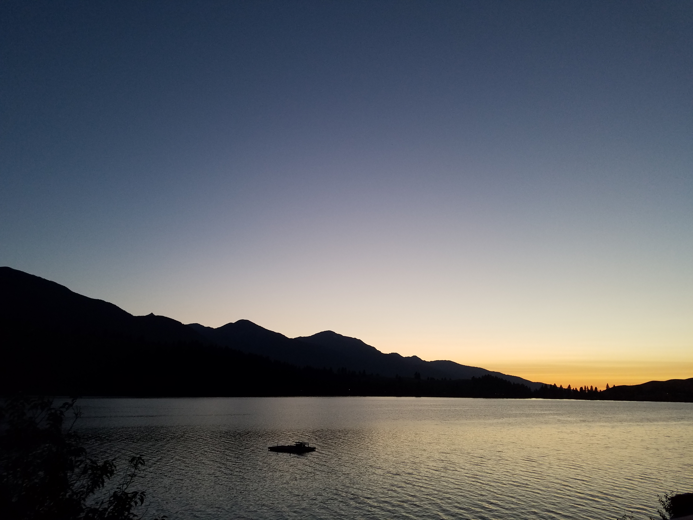
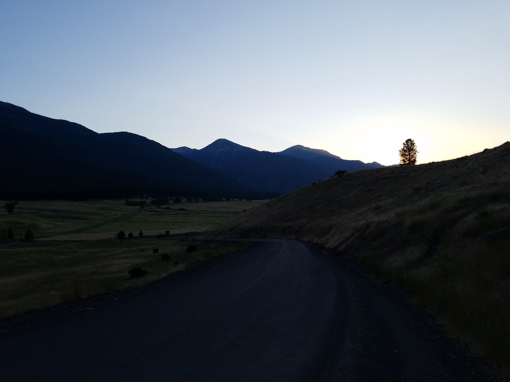

2025.09.22 :: viaggio
Visit to the Wallowas.

We stayed in a caboose.


Just before sunset./Just after sunset.

Hells Canyon is North America's deepest river gorge at 7,993 feet.

Night falls in the Wallowas with Lake Wallowa in the foreground.

Plenty of light in the sky but little to be found in the mountains.

Golden wheat foreground, dark green forest midground, snow-capped mountain background.